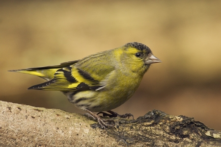

Friday, October the 2nd, 2009
back to: title, date or indexes
Here is a verbatim transcript of a snatch of dialogue from my dream last night.
Boffin : You do realise that the entire human brain could be recreated in the lab from a single cell of a finch?*
Mr Key : Would that be an attractive little finch like the siskin?
Boffin : Sadly, no.

Attractive little finch courtesy of the Fleet Pond Blog
* NOTE : My dream-boffin speaks false, of course. This is not actually true. Just my luck to have dreams peopled by mendacious boffins!